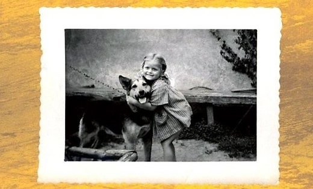

Pieci Pirksti

Tā sauc Māras Zālītes grāmatu. Grāmatā ir aprakstītas autores pašas bērnības atmiņas. Grāmata ir ļoti interesanta, bet par visu pēc kārtas.
Līdz šīs grāmatas lasīšanai es nonācu samērā nejaušā kārtā. Ar nolūku grāmatu nemeklēju, jo neesmu Māras Zālītes fans, kura man līdz šim ir asociējusies ar dzejoļiem no pamatskolas obligātās literatūras. Jāpiemin, ka dzejoļus es arī nemēdzu lasīt.
Grāmatu nopirka sieva, kura to ieraudzīja grāmatnīcā un nopirka prikola pēc, jo likās interesanta. Sievai mani neizdevās ieinteresēt šīs grāmatas lasīšanā. Tas izdevās sievasmātei. Sievasmāte grāmatu bija izlasījusi vienā vakarā un otrā rītā nevarēja noturēties visiem nenolasot dažas lappuses no nodaļas “Asinis”. Atļaušos šeit mazu daļu nocitēt:
Cits citu nomušījuši kā pirāti. Visi miroņi. Asiņu jūra! Tā viņiem vajag! Neliks vairs uz Goda dēļa. Tas, kurš vienīgais palicis dzīvs, tam arī nav ko priecāties, atbrauks milicija, tad redzēs! Tas, kurš nosaukts par Laimoni, paceļ galvu.
-Bitvaju! Žani, kurš tevi šitā? Es ne! Paga, es neko neatceros. Vellos!
Žanis ierauga savas un pārējo asinis. Seja, mati, visa galva, pat krekls ir asiņu piesūcies.
Mēs klausoties lasījumu smējāmies vēderus turēdami! Tik ļoti, ka spēka izsīkuma dēļ gardie smiekli bija pārvērtušies par epileptiskiem pīkstieniem. Kā var nākt smiekli par šādu tekstu, vai ne? :) Raugi, ir jāzin konteksts un notikumi pirms šī šausmu teksta.
Tad nu lūk, pēc šīs lasījuma perfomances liels kārdinājums bija izlasīt visu romānu. Grāmata nebūt nav tīrā komēdija, patiesībā gluži pretēji - aprakstītie notikumi un attainotie likteņstāsti ir traģiski. Stāsts ir par ģimeni, kas pēc kara atgriežas atpakaļ Latvijā no izsūtījuma Sībīrijā. Atgriežas cerībā uzsākt jaunu dzīvi. Tas izrādās nav tik vienkārši, jo dzimtene vairs nav tāda, kādu to cerēja ieraudzīt. Padomju represīvais režīms, kaimiņu stučīšana utt. utjpr. Tomēr grāmata lasās ļoti viegli un raiti. Visi šie notikumi tiek attēloti piecgadīgas meitenes Lauras acīm, kas manuprāt ir ļoti veiksmīgi izdevies. Piecgadīgs bērns tomēr pasauli uztver amizanti, rotaļīgi, optimistiski :)
Izrādās arī, ka autore šo grāmatu nebija izdevusi ātrāk savas mātes dēļ, kurai jau pieminot Sibīriju vien slikti palika, kas pierāda šīs grāmatas personiskumu un autobiogrāfismu (ja tā var izteikties).
Visiem, kas vēl nav lasījuši, iesaku. Es pats ar nepacietību gaidu solīto grāmatas turpinājumu :)